网页上怎样导入原文、看抽取进度
抽取的行为已经写进 docs/specs/story/ingest.md（一条命令兼管新建、接着抽与追加；第 1 章抽完书就出现；能随时停、能接着抽）。这一轮只问版式：导入入口和切章预览放在哪，进度放在哪，正在看的书抽完新章时怎么换数据。
稿子是在 nb-story 网页里用真实 nb-ui 组件搭的静态页（草稿 worktree，不合并），数据是编的：以一本 1,394 章的长书为例，顺带让“剩下的还要约 4 天”这种长书的真实情况露出来。
待定1. 导入原文：单独一页，还是书架上的对话框？
书架右上角“导入原文”。选好 TXT 后先给切章结果（章数、字数、丢掉的开头、每章标题与字数），确认后开始抽。
单独一页（推荐）
切章表能完整展开（长书上千章），追加新章与“改了已抽的章”的说明有地方写；开始后可以离开这一页。
书架上的对话框
不离开书架，但切章表只能在对话框里滚，说明要压缩。
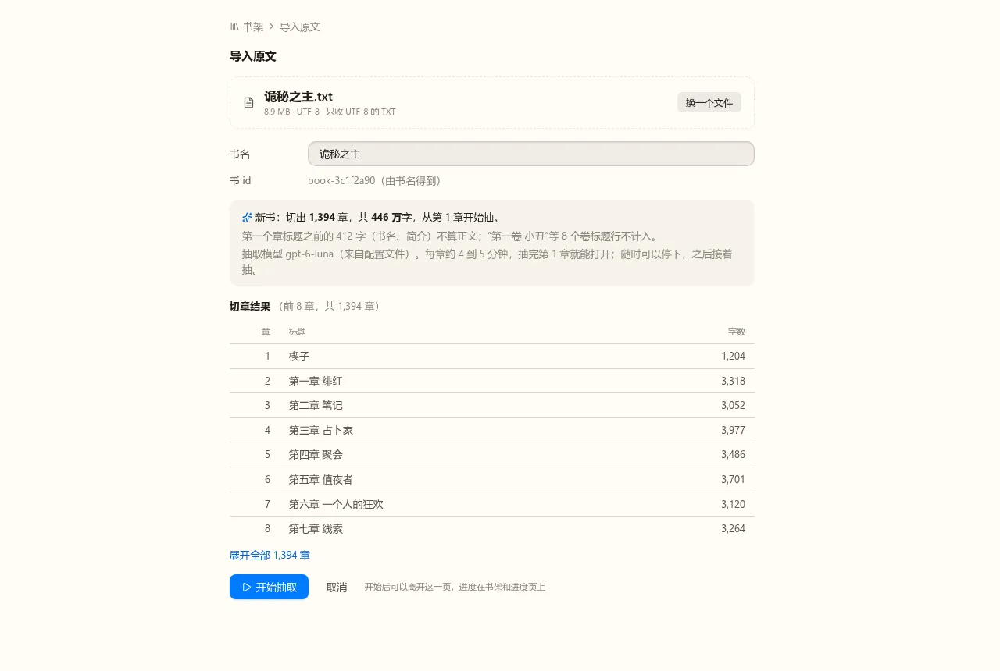
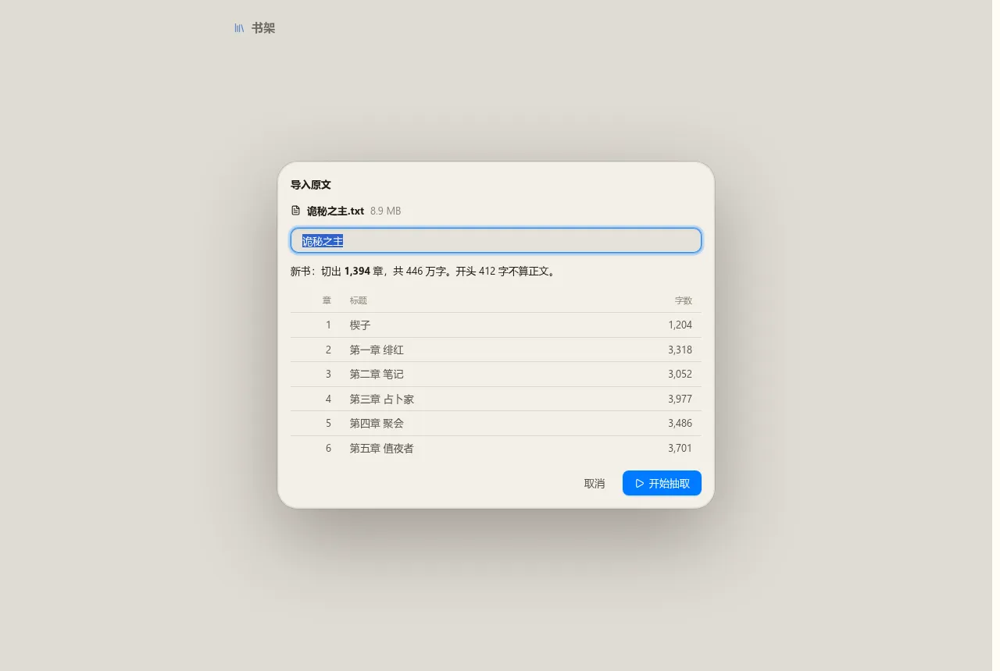
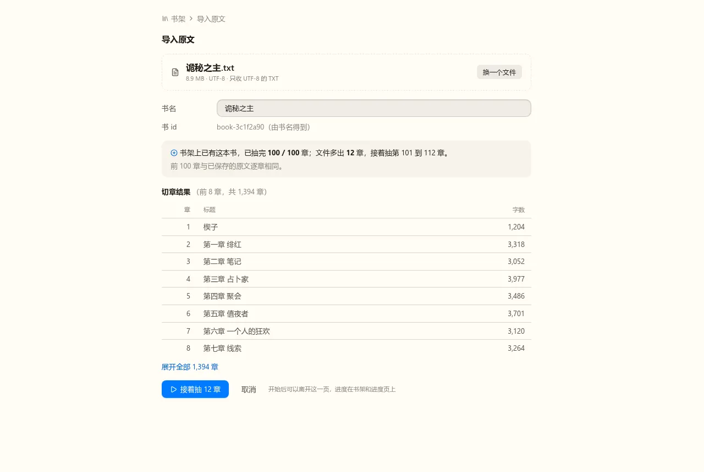
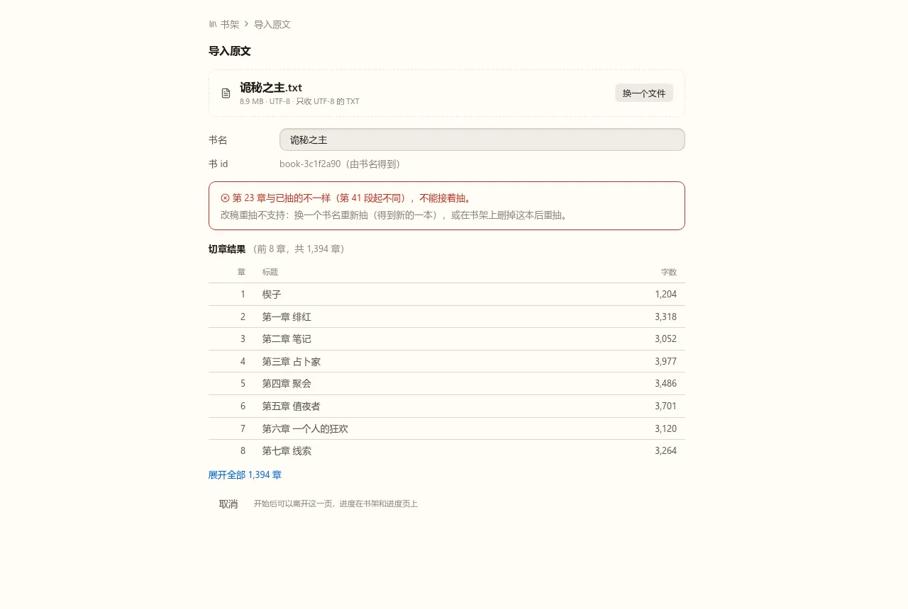
待定2. 抽取进度：每本书一个进度页，还是直接展开在书架上？
进度要给出：状态、抽完几章 / 共几章、正在抽哪一章哪一步、重试、用时与费用、每章平均、丢弃的记录、每章明细；运行中能停，停下了能继续。
进度页（推荐）
书架每本书一行：状态徽标、进度条、正在抽的章，右边“进度”进入进度页；停止、继续、每章明细都在进度页。书里顶栏也有入口（第 3 题的图）。
展开在书架上
书架上直接有停止 / 继续按钮和用时、费用一行，不另开页；没有每章明细。
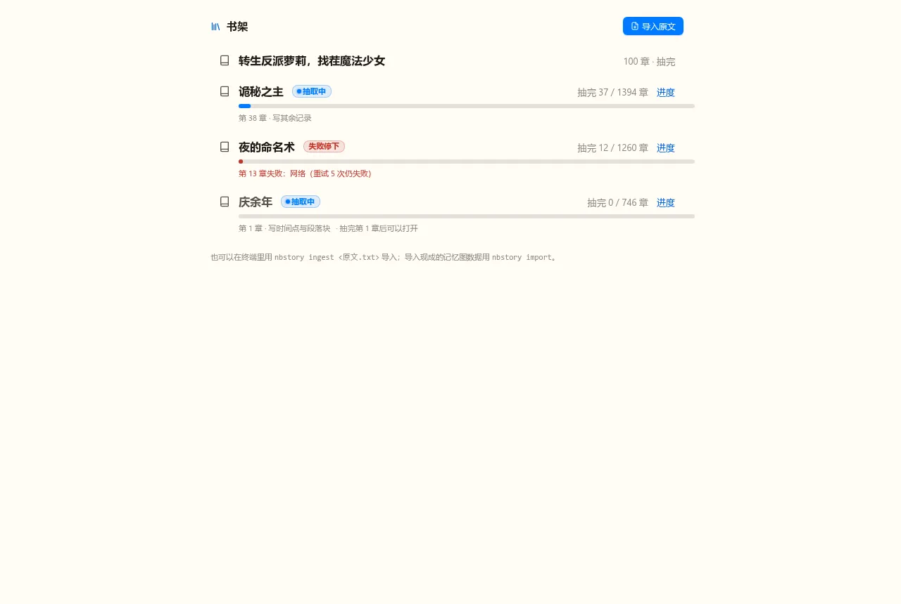
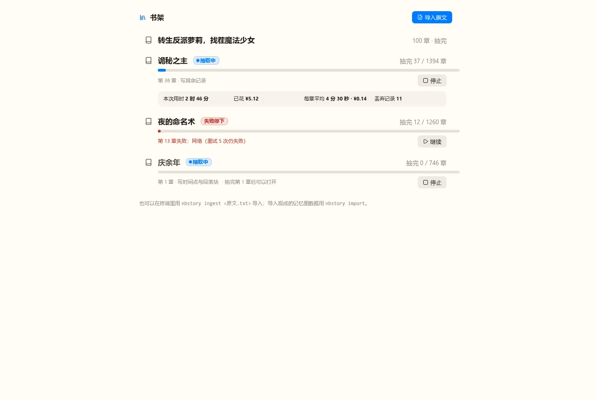
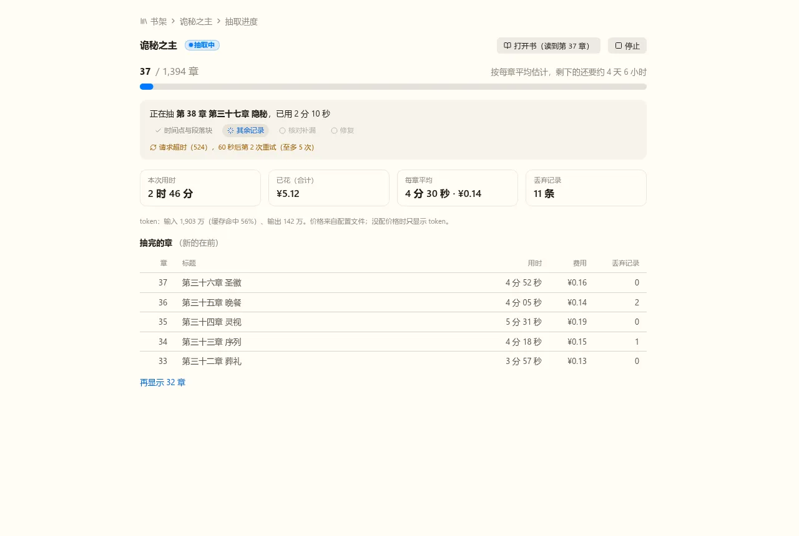
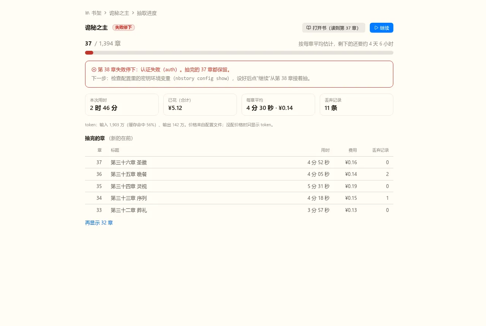
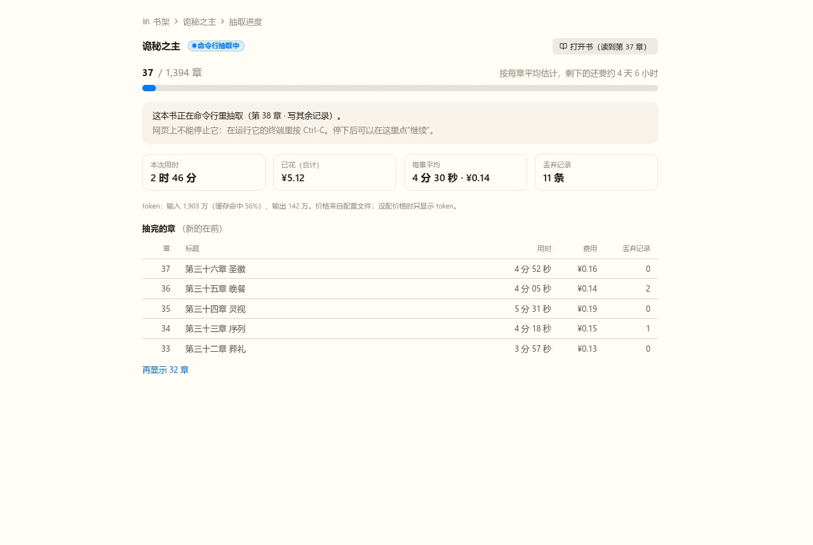
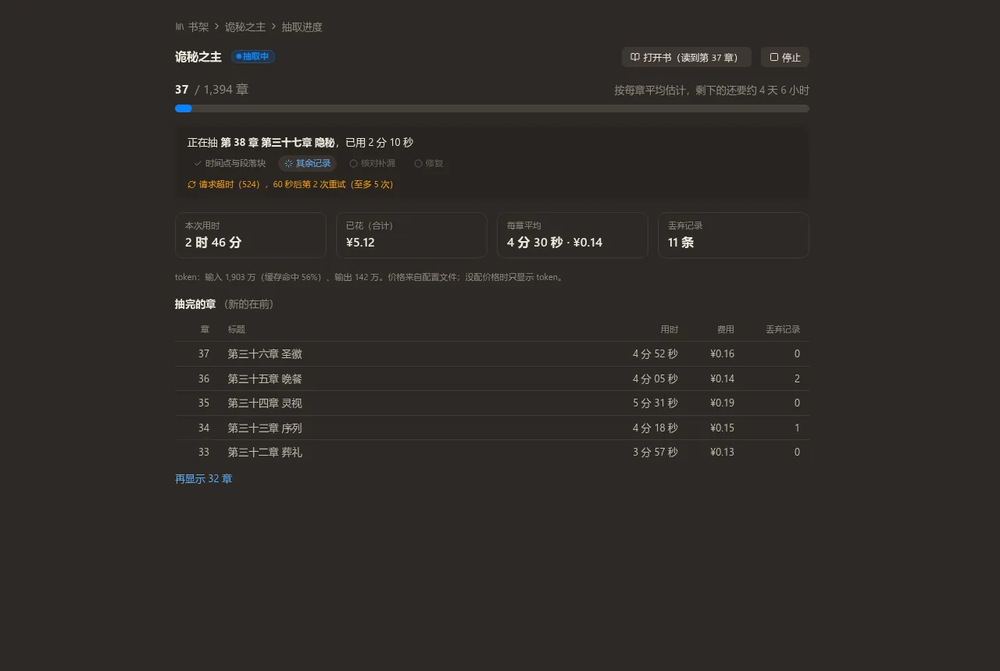
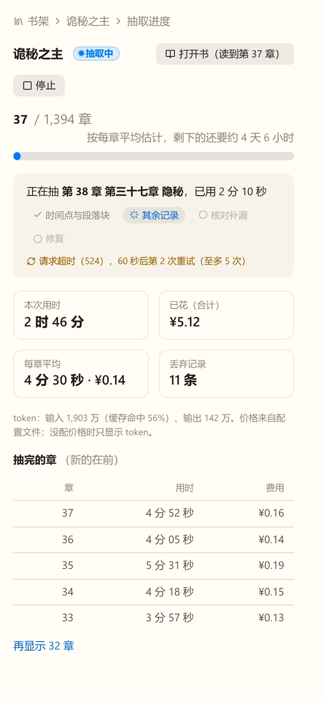
待定3. 正在看一本抽取中的书时，又抽完一章，怎么换数据？
书名旁有“抽取中 37 / 1,394”徽标，点开进度页。抽完第 38 章时：
顶栏提示，点了才换（推荐）
徽标变成“第 38 章已抽完，点这里更新”。正在看的页面、展开的人物卡、翻到的页都不会自己变。
自动换
后台换成新数据；阅读位置在最后时跟着往后挪一章。每 4 到 5 分钟页面内容可能变一次，翻页会回到第一页（游标失效）。
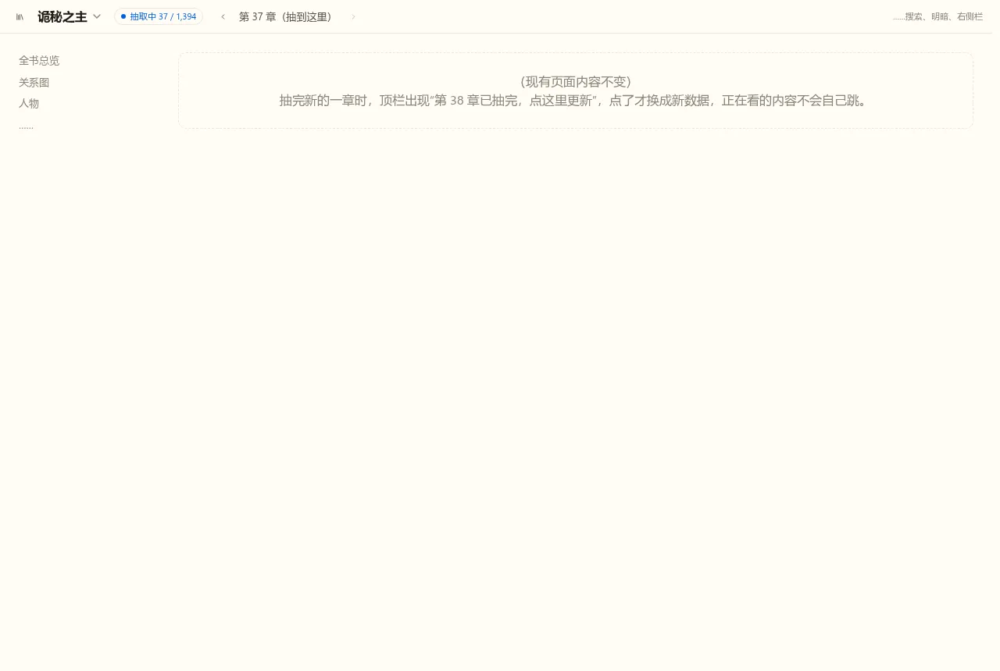
待定4. 其余细节照稿子写进查看器的 Spec，行吗？
包括：书架上各状态的写法、“还没抽完第 1 章的书不能打开”、失败与命令行运行时的说明文字、导入页上的模型与用时提示、手机宽度的收法。颜色、间距在实现时再调，不再回到评审板。
照稿子写
按前三题的答复改稿，写进 docs/specs/story/viewer.md，然后写计划。
要调整
在备注里写要改哪里，下一轮接着改。
- 长书的时间与费用：按 100 章的实测（每章约 4.5 分钟），1,394 章要四天多，费用按 deepseek-flash 低谷价粗算在千元以上（每章带全部已有记录，越往后越贵）。这次按决定不做费用控制，进度页只显示已花的钱和每章平均；“只带相关记录”另立 Task 时，这一页的数字就是对照。
- 还没抽完第 1 章的书：Spec 定的是它不在书库里，书架上这一行只来自抽取进度，所以点不开；稿子里书名置灰并写“抽完第 1 章后可以打开”。